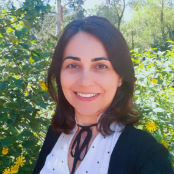

Rosemary Borges has been working as a Teacher in Basic, Technical, and Technological Education at the
Federal Institute of Education, Science, and Technology of Rio Grande do Norte (IFRN) since 2009. She
holds a degree in Software Development Technology, specializations in Systems Engineering and Professional
Education, as well as a master's degree in Computer Science. Currently, she is a Ph.D. candidate in
Computer Engineering at the University of Coimbra. In the academic field, she focuses on research related
to technologies applied to education, with an emphasis on Educational Technologies and Distance Education,
also investigating gender and inclusion issues in Professional Education.
She has publications
in these areas and has been involved in organizing related academic events. As a member of the
'Multireferentiality' research group, she explores the relationship between technologies, pedagogical
practices, and teacher training, addressing gender and accessibility issues in educational environments.
She has experience in guiding academic projects and participating in examination boards, evaluating
projects ranging from the integration of technology in Basic Education to the development of systems and
approaches in Distance Education.
LinkedIn
